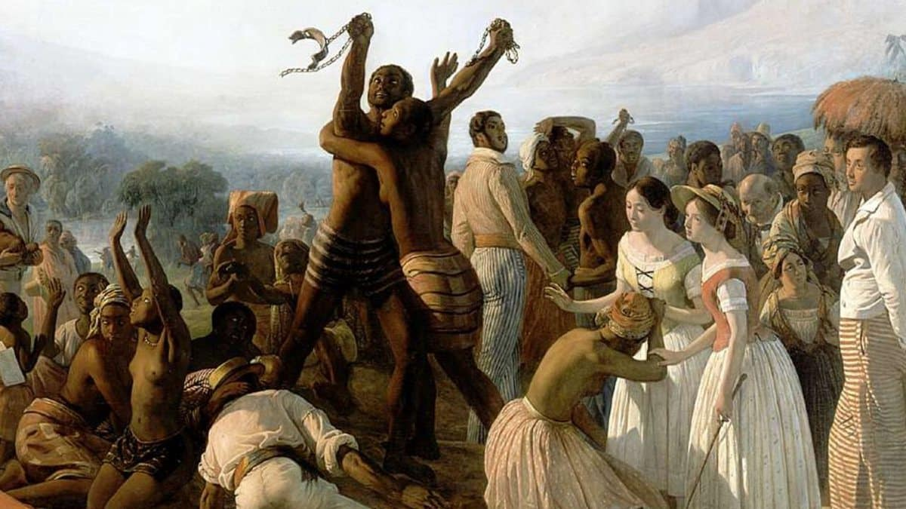
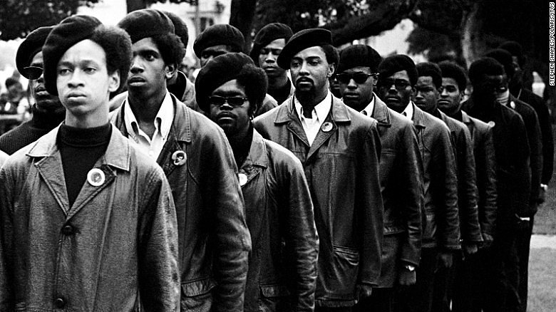
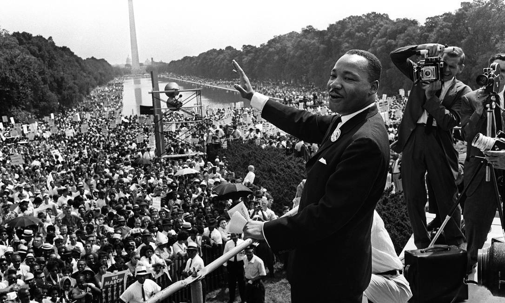
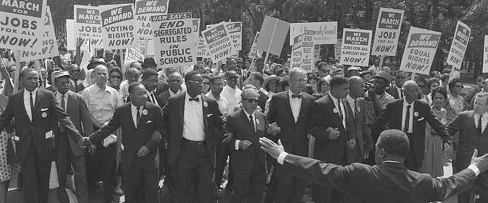
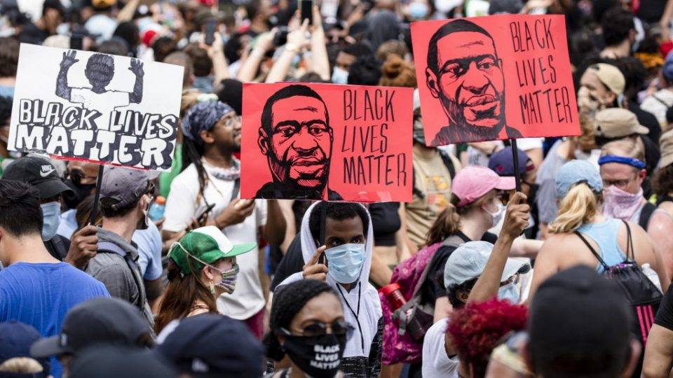
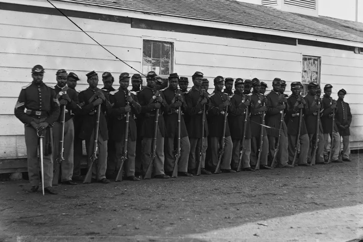
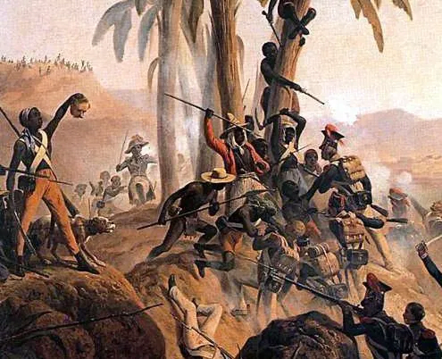
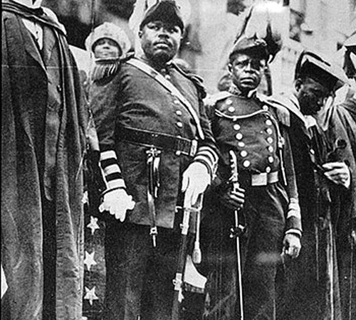
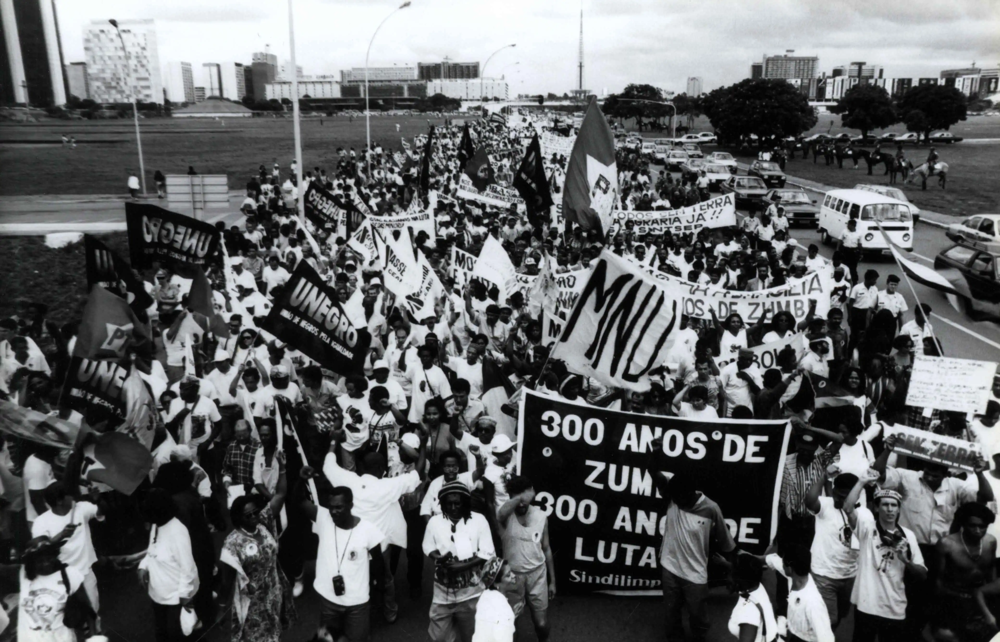

Principais Movimentos Negros na História
Abolição da Escravidão
Clique para ver mais
Panteras Negras
Clique para ver mais
Marcha Sobre Washington
Clique para ver mais
Movimento dos Direitos Civis
Clique para ver mais
Movimento Black Lives Matter
Clique para ver mais
Movimento Abolicionista nos EUA
Clique para ver mais
Movimento de Independência do Haiti
Clique para ver mais
Movimento de Repatriamento de Marcus Garvey
Clique para ver mais
Movimento Zumbi dos Palmares
Clique para ver mais